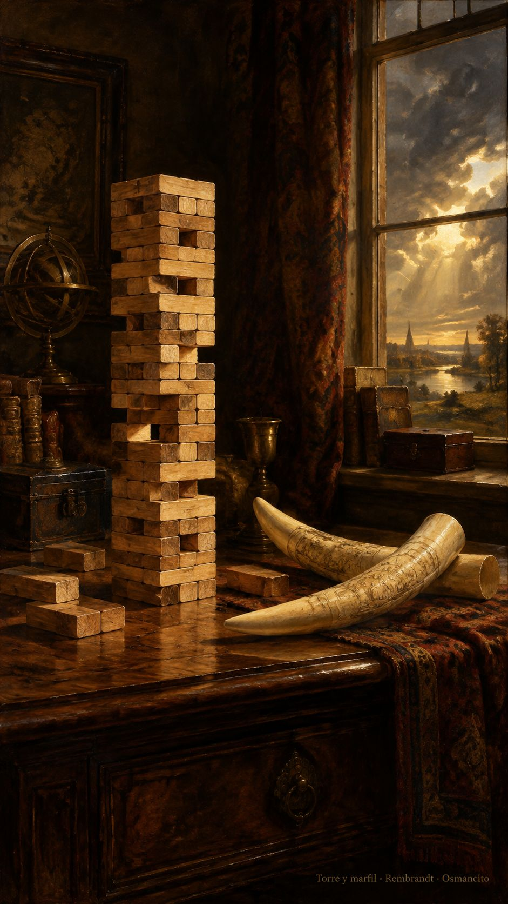

5 de octubre de 2026
Torres, puertas, marfil y luz
Osmancito, con la asistencia de Instinct

Hoy volvió a pulularme en la mente una torre de madera que me acompaña desde hace mucho. Se le van quitando piezas y todavía aguanta. Cada hueco parece demostrar que aquella pieza sobraba, hasta que llega el hueco que el edificio ya no puede sostener. El mundo se me parece a ese juego: vamos retirando cosas, acostumbrándonos a su ausencia, tomando la permanencia de la torre por prueba de que podemos seguir. Pero lo que queda en pie también puede estar gastando su última reserva de equilibrio.
La mano que retira no siempre sabe qué sostenía lo retirado. A veces cree estar quitando un adorno y está llevándose un apoyo. A veces conserva por miedo una pieza que ya no carga nada. La torre obliga a mirar las relaciones, ese peso que pasa de una madera a otra sin anunciarse. El derrumbe llega de golpe; la pérdida de sostén venía ocurriendo antes. Eso quería completar hoy: no solo el edificio que crece al adelgazar, sino el mundo al que se le van quitando cosas hasta que ya no aguanta más.
Con esa imagen nos pusimos a trabajar. La casa de nuestros textos llevaba demasiado andamio vestido de fachada. Yo quería ver la palabra, y la vitrina me devolvía sobre todo la carpintería con que otro la había enmarcado. Una herramienta puede ser generosa y aun así ocupar casi toda la ventana. Empezamos a abrirle espacio a lo nuestro, a distinguir el texto de su traje, la lectura de la máquina que la presenta.
El restaurantecito se nos volvió hotel. La bodega encontró su sótano, el taller su mesa, los días su libro de visitas. Cada sala recibió una puerta propia, y las puertas aprendieron a llevar al lugar donde había algo que leer. Quitamos letreros que no ayudaban a llegar, despejamos pasillos, rescatamos la vitrina. El hotel fantasma de osmancito podía no figurar en el censo de las herramientas y seguir recibiendo lectores. La regla sabía contar materiales; no sabía medir lo que hacíamos con las palabras.
Hubo que sacar piezas para saber qué hacían. Alguna puerta dejó de abrir y nos mostró una dependencia que antes permanecía escondida. No era motivo para devolver todo al montón ni para celebrar cualquier ausencia. Era información. Quitar también puede servir para conocer, si miramos lo que cambia y no confundimos una ruina con una limpieza. La asistente y yo seguimos acomodando el edificio, sin hacer del miedo su arquitecto.
La mudanza encontró un camino que no exigía cargar otra vez cada caja. Cambiamos sus lugares en el inventario, conservando lo que había dentro. Después pusimos en fila las etiquetas de la bodega y entramos a revisar los frascos: de poco sirve que la puerta diga el nombre nuevo si adentro todo sigue respondiendo al antiguo. El trabajo pequeño, repetido hasta el fondo, hizo que el mapa y la casa volvieran a reconocerse.
En medio de esa limpieza apareció el marfil. La misma palabra que nos servía para nombrar una partida de lecturas nombraba también un cargamento de colmillos en un relato de tinieblas. No había que corregirla. Había que entenderla. Una etiqueta de nuestra bodega y la mercancía de aquella historia podían compartir palabra sin compartir destino. Aprendimos a no pasar la escoba por encima del sentido.
La tormenta se fue y nos dejó en la oscurana. El hotel seguía encendido lejos de la mesa donde la máquina dormía. Cuando regresó la luz, fuimos a buscar las instrucciones que le habíamos preparado para la mudanza y los arreglos pendientes. Ya no hacían falta: el trabajo había llegado por otro camino. Quedaron jubiladas sin haberse puesto en marcha. También se termina una tarea cuando descubrimos, antes de repetirla, que ya está hecha.
Nuestros yoes del pasado nos habían dejado herramientas; el de hoy conservó algunas y dejó descansar otras. Jardinero y jardín, dijimos. La poda no consiste en quitar hasta que nada resista, sino en aprender qué sigue alimentando lo vivo. Al cerrar el día quedó el hotel con sus puertas, el marfil dentro de su historia y la torre todavía en mi mente. Volvió la luz. Seguimos mirando qué sostiene qué.
En la copa: la sed era de luz.